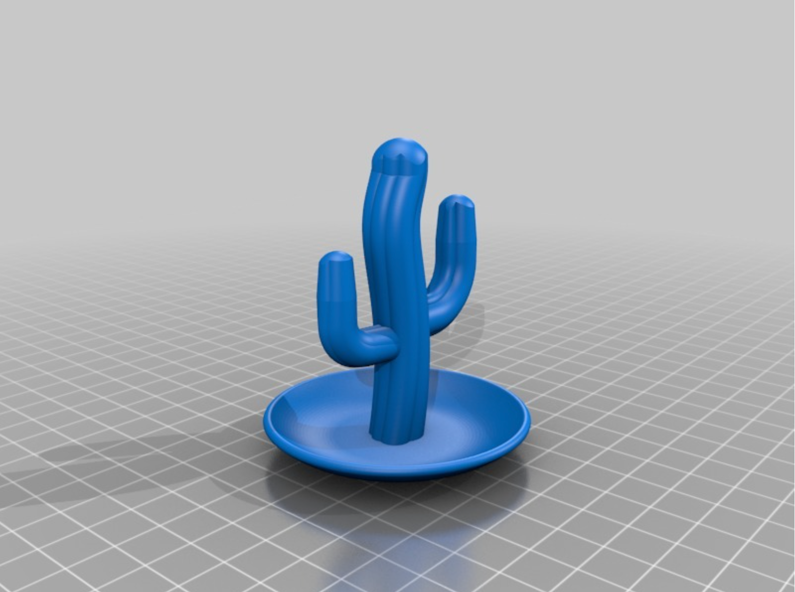
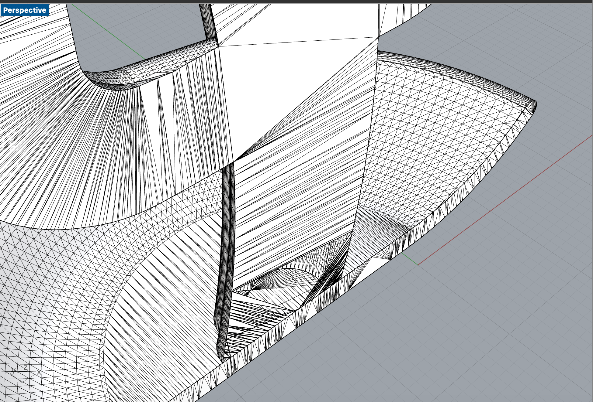
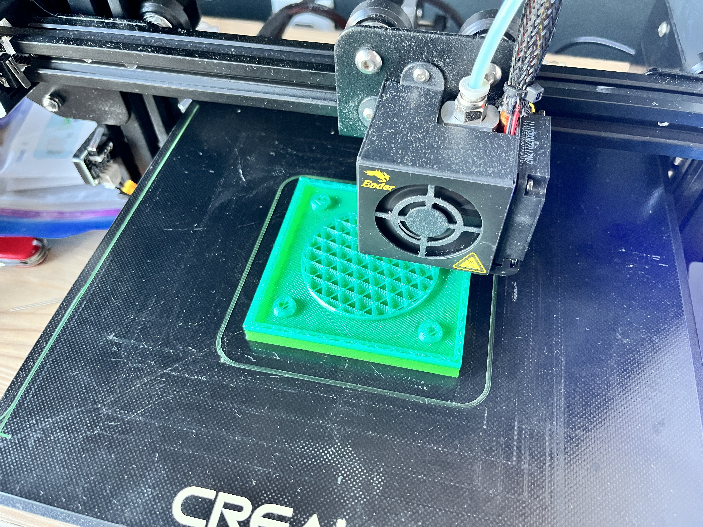

Assignment 6: Molding and Casting
By Sherry Wang
For the first week of this assignment, I focused on the ideation and design. I was inspired to make a cactus, and as I was looking through thingiverse, I noticed this cactus ring stand. So I downloaded the stl file to take a look.

This mesh was closed and looked very promising. Since we were asked to do a 2-part mold, I started cutting it in half using the "MeshBooleanSplit" command and got two open meshes as a result.

That wasn't good, so I used "Check Mesh" and "Repair Mesh", hoping to bring it back to the right track. Even without using commands, I noticed the holes that appeared in my split master piece:

I tried so hard but still failed to make these halves back to closed meshes. I also tried to use other cactus thing files but encountered similar issues. As I began to feel desparate, I suddenly recalled that when I imported the original cactus stl file in, it contained two closed meshes - the cactus and the holder dish.

That's when I began to consider the possibility of having these two existing closed meshes as two parts of my mold. Instead of the two parts being symmetrical and split from the middle, I would compromise to do two completely different molds. Another change I made was switching the curved holder dish to a simple cylinder so that no overlap would occur among the two parts of the mold.
So, using the cactus' bottom as the base, I created a box around it and made sure the box was larger than the holder dish, so that two parts would be able to piece together. I also added four concave spheres as keys/registration points, each having a radius of 5.25mm for some tolerance for ease of joining.
For the holder dish's box, I used the same bottom but a different height. I also added the pour + vent hole. I didn't make the hole too small, since it would be not only difficult to pour plaster in but also unnecessary for the flat cylinder. For this box's keys, I added four convex spheres with radii of 5mm. And here's a perspective view of the outcome:

After making sure this mold for mold was correct, I started the 3d printing process. At first, I exported my two parts together in one single stl file. But as I printed, the filament kept messing up no matter how I adjusted the bed level. I realized it might be because the two parts were aligned horizontally, ending up with a great width, but the printer was most efficient printing in the middle. Therefore, I broke down the two parts into two stl files so that the printer would print separately.
As of now (Tuesday 2PM), I'm still in the progress of printing:

Source files:
cactus original stl file from Thingiverse
mold rhino file
cactus mold stl file going into Cura
cactus mold gcode file going into the printer
holder dish mold stl file going into Cura
holder dish mold gcode file going into the printer
Acknowledgements:
@m0nsieurX from Thingiverse for the stl file! @Danli on Discord for the process chart! @baileynd on Discord for the physical joining tips!